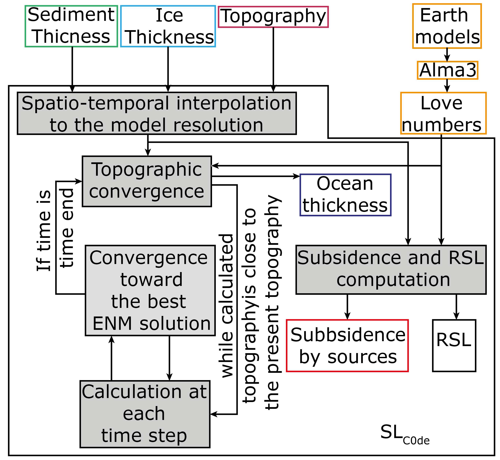

Numerical implementation
The numerical implementation is using the derived impletation of [Dalca et al., 2013] from [Kendall et al., 2005]. This implementation is using two iteration counter, \(i\) and \(j\). \(j\) is associated to the time iteration and at each iteration the implementation iterate a convergence to find the best solution of the SLE where the counter is \(i\). The \(i\) counter will be called the inner iteration. From \(\delta S^{i=1}_j\) to \(\delta S^{i=\infty}_j\) to will calculate the best solution of SLE. The numerical implementation require a third counter, \(k\) called outer iteration, where the loop over the whole considered time is covered to improve first guess of initial topography, \(T_0^{k=1}\) until the convergence (\(T_0^{k=\infty}\)).
The SLE is rewrite to :
Sea Level equation resolution
Sea level equation Resolution implementation
We introduce the variation of ocean thickness :
If the last step of the outer iteration was completed, \(k-1\). The topography is updated :
Where \(T_p\) is the present day topography, we substract to the present day topography the earth movement. The resulting ocean function deduced from the reformulation of the topography is :
The sea level can be then estimated using a new estimation of the sea level change for the kth iteration.
for the first inner iteration \(i=1\), the initial variation of ocean thickness is predefine. The spatially invariant component is resulting from the variable ocean surface.
With
Resolution of SLE including the deconvolution
The implementation in iteration result in a modification of the geoid and ground displacement :
This applied to the SLE equation, by linearity of the IGFs:
where \(E_l = 1 + k_l^E - h_l^E\), \(\beta(l,t_n,t_j)=k_l^V(t_j-t_n)-h_l^V(t_j-t_n)\) and \(T_l = \frac{4\pi a^2}{2l+1}\)
In SL_C0de, \(T_l \sum_{n=0}^{j-1} \beta (l,t_n,t_j)\delta M_{lm,n}^{k,i}\) is resolved in matrix produce. This result in a strong allocation of RAM as the \(\beta (l,t_n,t_j)\) are stored in a matrix of size (time,time,(maximum degree + 1)(maximum degree +2)/2). The resulting time gain is very important.
The conservation formula become :
Where \(RO_j = \Delta \mathcal{SL}_j C_j\) and \(TO_j=T_0[C_j-C_0]\).
Convergence parameter
Inner convergence on SLE
We define a convergence criterion :
Convergence for the SLE is limited by the convergence criterion : \(\xi_j^{i,k}\). We suppose that \(\xi_j^{i,k} < \epsilon_1\) when
Outer convergence criterion
Grounded ice correction
The marine grounded ice is dependent of RSL variations. The ice is grounded if it satisfies :
At each topographic iteration (\(k\)) we update the grounded ice.
Computation of ground and geoid subsidence from different load source
A functionality developed in \(SL_{C0de}\) is the computation of the different component of the SLE separately, by type of Load and by viscous or elastic component. The development of this functionality was motivated by the necessity of exploring the different source of the RSL variation in a more and more complex modelization.
Elastic components of SLE :
We define 4 elastique component in the SLE, the ground displacement \(\Delta R^E_{lm}\), the geoid displacement \(\Delta G^E_{lm}\), the rotational ground displacement \(\Delta R^{T,E}_{lm}\) and the rotational geoid displacement \(\Delta G^{T,E}_{lm}\).
Viscous components of the SLE :
We define also 4 viscous component in the SLE, the ground displacement \(\Delta R^V_{lm}\), the geoid displacement \(\Delta G^V_{lm}\), the rotational ground displacement \(\Delta R^{T,V}_{lm}\) and the rotational geoid displacement \(\Delta G^{T,V}_{lm}\).
True sediment subsidence
This library was originally developed to compute effect of sediment on RSL. We considered the pure effect of sediment on RSL but also a corrected effect of sediment from water replacement. The sediment, when they are deposited, replace water and then generates an uplift induced by the diminution of ocean thickness. We choose to correct the sediment from the ocean load.
To estimate effect of sediment on RSL, you must substract the effect of the mass variation described above to the effect of sediment mass variation.
Relative sea level variations
We estimate a pure RSL where the sea level is not including variations of sediment thickness and ice thickness.
The other estimation is the full RSL :
The resulting estimation of RSL can be compared with the ESL (only \(\frac{\Delta \Phi ^{i-1,k}_j}{g}\)).
Input data format
Mass grid format
The different mass grid can be input as height grid, converted to mass by a simple multiplication by a defined density or as mass grid directly. The grids can be irregular or regular, they are interpolated over a sphere using stripy. These data are input as the derivative variations over time.
The topography as initial parameter is the present day topography. The initialization will update the topography according to the ice and sediment thickness.
Implementation of Love numbers
The [Dalca et al., 2013] theory is based on the love number theory which forces us to calculate love numbers. The love numbers exits in two forms, normal mode and decay. They can also include compressible processes. We choose for computation facilities to use the love numbers computed by ALMA3 code [Melini et al., 2022]. This code is calculating incompressible decay love numbers. Benchmarking on compressible vs incompressible love numbers have demonstrated no significant difference in computed vertical displacement over 256 spherical harmonics degree. We urge you to use this code with a degree higher than 256.
The code is working with a precise file structure for love numbers :
file |
Love numbers |
|---|---|
h_e |
\(h_{\ell}^E\) |
h_e_T |
\(h_{\ell}^{T,E}\) |
h_ve |
\(h_{\ell}^V(t)\) |
h_ve_T |
\(h_{\ell}^{T,V}(t)\) |
k_e |
\(k_{\ell}^E\) |
k_e_T |
\(k_{\ell}^{T,E}\) |
k_ve |
\(k_{\ell}^V(t)\) |
k_ve_T |
\(k_{\ell}^{T,V}(t)\) |
l_e |
\(l_{\ell}^E\) |
l_ve |
\(l_{\ell}^{T,E}\) |
l_ve |
\(l_{\ell}^V(t)\) |
l_ve_T |
\(l_{\ell}^{T,V}(t)\) |
The time.dat file contains the time at which the viscous decay love numbers are computed. An example file of configurations files for ALMA3 is provided in the code supplementary files.
Note
Add the link to the ALMA3 configuration files.